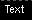
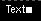

Text
Description:
An area of text placed on a chart.

To create a Text, select draw mode from the main toolbar and
right click with the mouse on the chart
you wish to apply it to. This can be either the main chart area or any
of the indicators that appear in the indicator chart area. Select "New
Chart Object" from the popup menu and select Text from the menu.
After selecting the menu option, the mouse
pointer will change
to a hand pointer. To place the Text on the chart the user must
click the left mouse button. The object
will then appear on the chart.
Selecting:
In order to edit the Text,
the user must first select it. First, the user must be in draw mode.
Select the Text by left clicking with
the mouse anywhere on the object. The object will be selected when a
"grab box" appears just to the right like this:

You
then can right click the mouse for a context menu for the object. You
may also double-left click on the object to bring up the edit dialog
directly. There are
three options when a Text is selected. Edit, Move and Delete.
Edit:
The Text settings are defined as follows:
- Color - The color of the text.
- Font - The font to use for the text.
- Label - The actual text to appear.
- Set Default - If checked, all settings will default to the
current values when new ones are created.

Move:
To drag the Text across the chart, click the left mouse button on
the "grab box". The Text will then follow the mouse pointer. To
drop the Text, click the left mouse button.
Delete:
This will permanantly delete the Text from the chart.